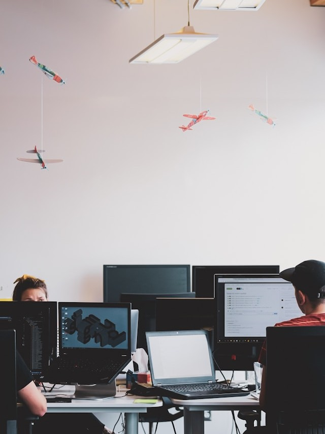

Bruno Molina, Uma Pessoa com Deficiência Auditiva - PcD, estudante do curso superior de Tecnologia em Análise e Desenvolvimento de Sistemas. Unicesumar. 2024 - 2026
o Notepad++ e o Adobe Dreamweaver CS3 para desenvolver websites com HTML e CSS.
os princípios básicos de uma linguagem de programação, com carga hora(s) 12 hora
PYTHON - ADVANCED MODULE, com cargar horária de 32 hora(s) 2022
PYTHON - BASIC MODULE, com cargar horária de 32 hora(s) 2022
PYTHON - INTERMEDIARY MODULE, com cargar horária de 32 hora(s) 2022
DESENVOLVIMENTO ORIENTADO A OBJETOS UTILIZANDO A LINGUAGEM PYTHON, com carga horária de 10 hora(s)2023
CONCLUIU COM ÊXITO O CURSO DE FINANÇAS COM DADOS, com carga horária de 2 horas. FINANÇAS COM DADOS CURSO DASH.PY, com a carga horária de 15 horas.
